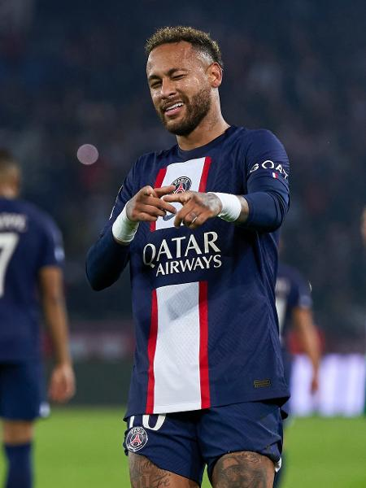
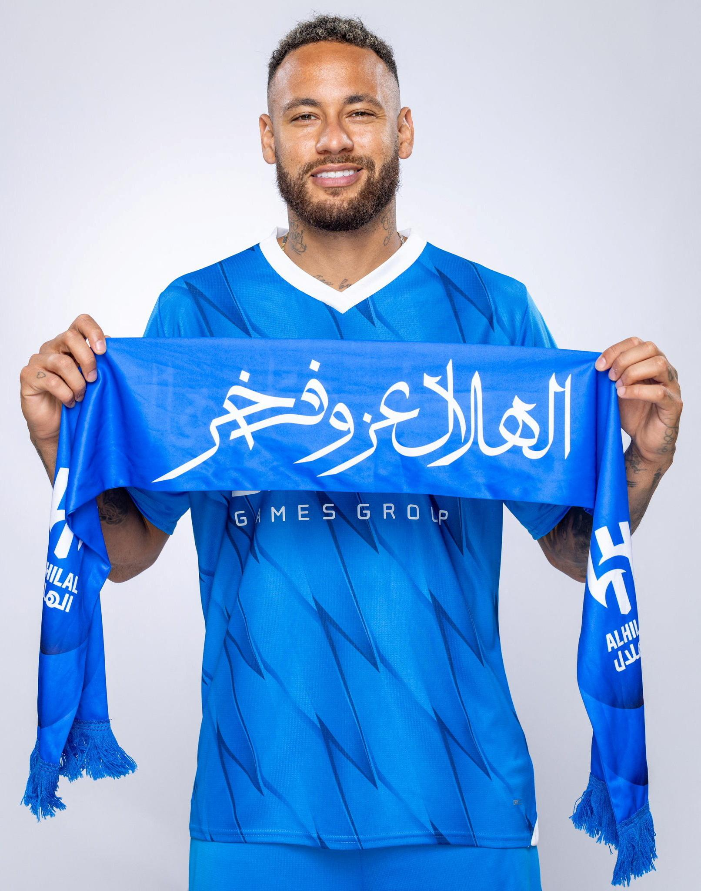
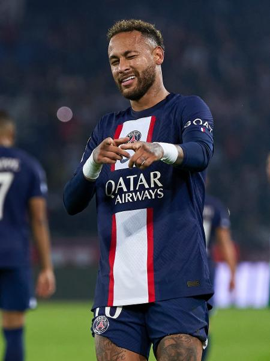
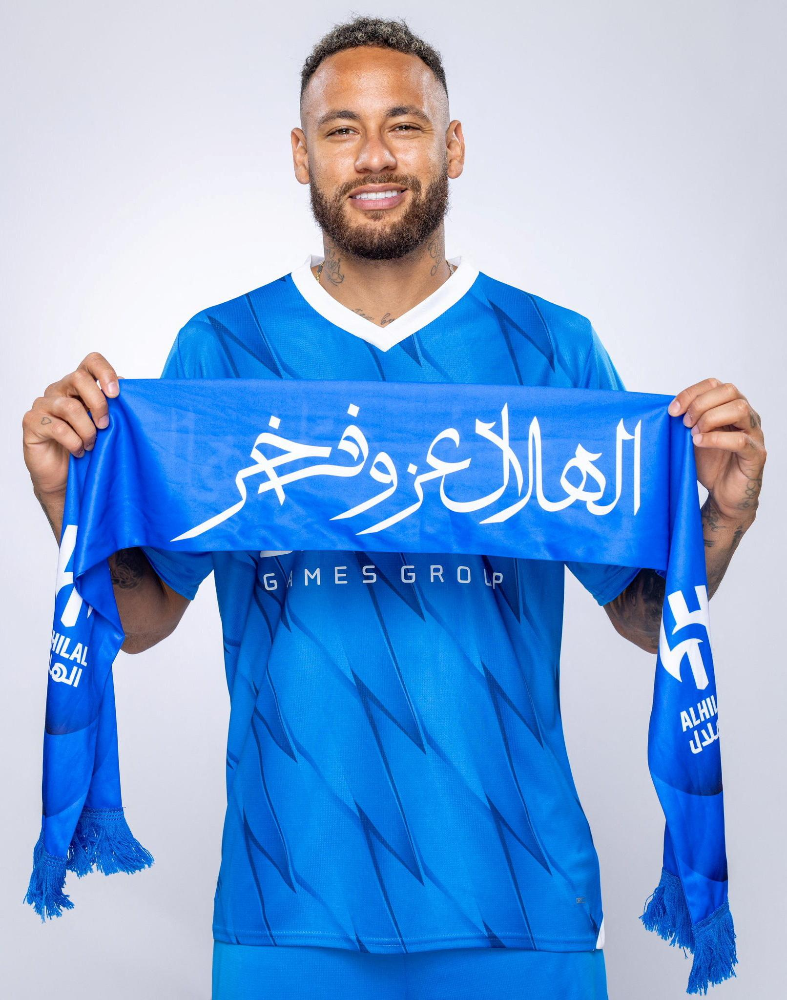

Um pouco sobre os jogadores
Lionel Messi, o maestro argentino, dança entre os defensores com a graça de um bailarino, seus pés ágeis criam melodias de vitória nos gramados sagrados do futebol. Neymar, o brasileiro imprevisível, dribla com a astúcia de um malabarista, encantando multidões com sua habilidade única e deixando adversários perplexos com sua genialidade. Cristiano Ronaldo, o fenômeno português, irradia uma determinação feroz, seus saltos majestosos e chutes poderosos ecoam como trovões, moldando o destino das partidas com sua presença imponente. Três ícones do esporte, cada um com sua própria aura, unidos pela paixão pelo jogo e eternizados nos corações dos fãs em todo o mundo.
Cristiano Ronaldo
Cristiano Ronaldo é sinônimo de excelência no mundo do futebol. Sua determinação, trabalho árduo e habilidade atlética o elevaram ao status de lenda viva do esporte. Desde seus primeiros dias no Sporting de Lisboa até suas passagens históricas pelo Manchester United, Real Madrid e Juventus, Ronaldo deixou sua marca com uma impressionante coleção de gols e títulos. Sua presença imponente dentro de campo, combinada com sua ética de trabalho incansável, o tornam uma inspiração para jogadores de todas as idades. Fora das quatro linhas, Ronaldo é reconhecido por sua generosidade e compromisso com causas sociais, demonstrando que seu impacto vai além do futebol. Cristiano Ronaldo não é apenas um jogador, é um ícone global que transcende o esporte e inspira milhões em todo o mundo.
Lionel Messi
Lionel Messi é mais do que apenas um jogador de futebol; ele é uma lenda viva do esporte. Desde os seus primeiros dias no Barcelona até a sua jornada épica pelo Paris Saint-Germain, Messi tem cativado o mundo com sua genialidade dentro de campo. Sua habilidade incomparável de driblar, visão de jogo e precisão nos passes o colocaram em um patamar acima dos demais. Além disso, sua humildade e dedicação fora de campo inspiram milhões de fãs em todo o mundo. Messi não é apenas um jogador de futebol, mas um ícone que transcende fronteiras e gerações, deixando um legado que será lembrado para sempre no mundo do esporte.

Neymar Junior
Neymar Jr. é uma explosão de talento e criatividade no mundo do futebol. Sua habilidade única de driblar, combinada com sua velocidade e precisão nos passes, o tornam um dos jogadores mais emocionantes de se assistir. Desde os seus dias de jovem prodígio no Santos até sua ascensão ao estrelato no Barcelona e no Paris Saint-Germain, Neymar continua a encantar os fãs com suas jogadas incríveis e gols espetaculares. Além de seu talento indiscutível, sua personalidade vibrante e carismática o tornam uma figura adorada em todo o mundo do esporte. Neymar não é apenas um jogador de futebol, mas uma inspiração para milhões de jovens que sonham em seguir seus passos e deixar sua marca no mundo do futebol.
 


